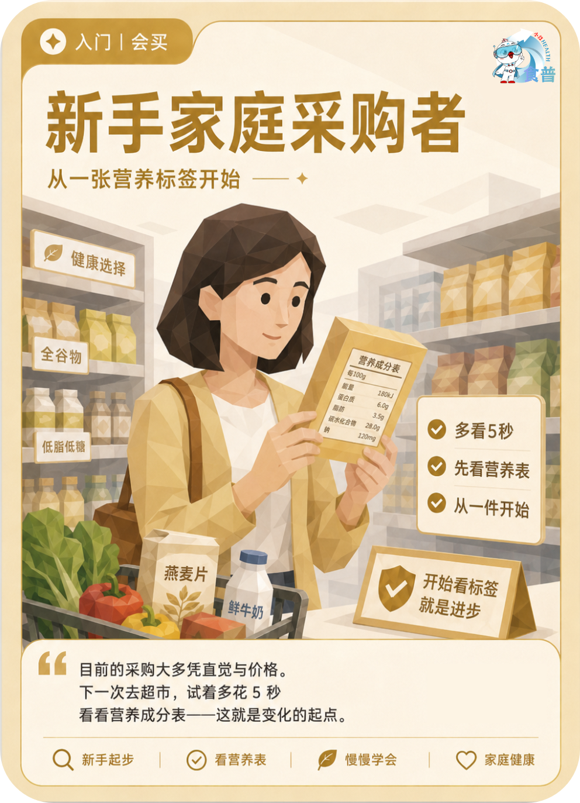

健康主理人
入门
会买
F16
新手家庭采购者
从一张营养标签开始
目前的采购大多凭直觉与价格。下一次去超市,试着多花 5 秒看看营养成分表——这就是变化的起点。
手机端可点击“打开原图”后长按图片保存；也可以直接长按上方图卡保存。

从一张营养标签开始
目前的采购大多凭直觉与价格。下一次去超市,试着多花 5 秒看看营养成分表——这就是变化的起点。
手机端可点击“打开原图”后长按图片保存；也可以直接长按上方图卡保存。